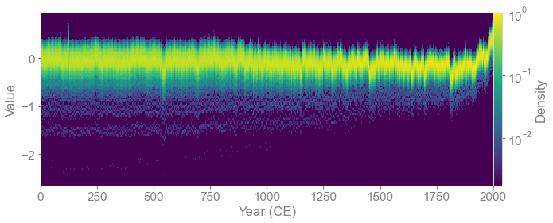
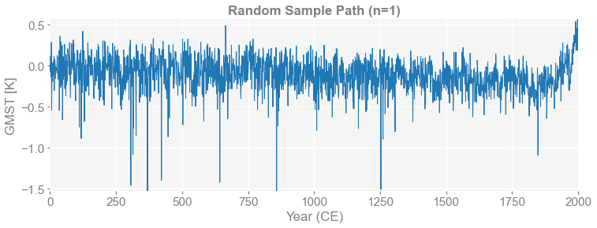
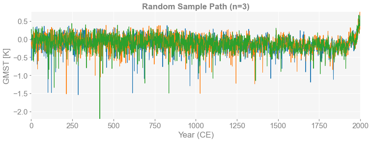
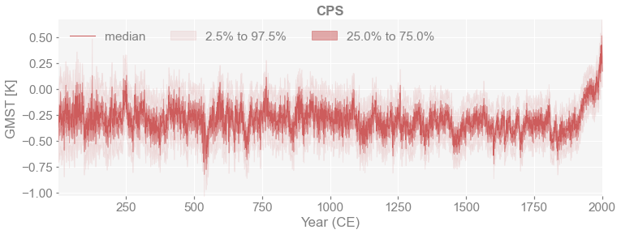
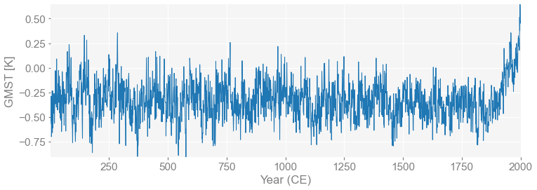
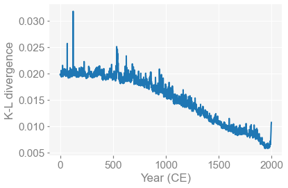

Quickstart
Contents
Quickstart#
[1]:
%load_ext autoreload
%autoreload 2
import pens
Load data from a .nc file#
[2]:
# the data can be downloaded from:
# https://atmos.washington.edu/%7Ehakim/lmr/LMRv2/gmt_MCruns_ensemble_full_LMRv2.1.nc
path = './data/gmt_MCruns_ensemble_full_LMRv2.1.nc'
ens_LMR = pens.EnsembleTS().load_nc(path, var='gmt')
[3]:
print(ens_LMR.value.shape)
print(ens_LMR.nt)
print(ens_LMR.nEns)
(2001, 2000)
2001
2000
Plot the quantiles of the ensembles#
[5]:
fig, ax = ens_LMR.plot_qs(ylabel='GMST [K]', title='LMR v2.1')

Plot the ensembles in the form of timeseries 2d histogram#
[6]:
fig, ax = ens_LMR.line_density(ylim=(-1, 1))

[7]:
fig, ax = ens_LMR.line_density(color_scale='log', cmap='viridis', bins=[500, 100])

Get and plot random sample paths from the ensembles#
[8]:
for n in [1, 3]:
ps = ens_LMR.sample_random(n=n, seed=2333)
fig, ax = ps.plot(ylabel='GMST [K]', title=f'Random Sample Path (n={n})')
print(ps.value.shape)
(2001, 1)
(2001, 3)


Compare against another set of ensembles#
[9]:
import pandas as pd
import numpy as np
df = pd.read_table('./data/CPS_new.txt')
df
[9]:
| Year_CE | GMST_anomaly_wrt_1961_1990_member_1 (°C) | GMST_anomaly_wrt_1961_1990_member_2 (°C) | GMST_anomaly_wrt_1961_1990_member_3 (°C) | GMST_anomaly_wrt_1961_1990_member_4 (°C) | GMST_anomaly_wrt_1961_1990_member_5 (°C) | GMST_anomaly_wrt_1961_1990_member_6 (°C) | GMST_anomaly_wrt_1961_1990_member_7 (°C) | GMST_anomaly_wrt_1961_1990_member_8 (°C) | GMST_anomaly_wrt_1961_1990_member_9 (°C) | ... | GMST_anomaly_wrt_1961_1990_member_991 (°C) | GMST_anomaly_wrt_1961_1990_member_992 (°C) | GMST_anomaly_wrt_1961_1990_member_993 (°C) | GMST_anomaly_wrt_1961_1990_member_994 (°C) | GMST_anomaly_wrt_1961_1990_member_995 (°C) | GMST_anomaly_wrt_1961_1990_member_996 (°C) | GMST_anomaly_wrt_1961_1990_member_997 (°C) | GMST_anomaly_wrt_1961_1990_member_998 (°C) | GMST_anomaly_wrt_1961_1990_member_999 (°C) | GMST_anomaly_wrt_1961_1990_member_1000 (°C) | |
|---|---|---|---|---|---|---|---|---|---|---|---|---|---|---|---|---|---|---|---|---|---|
| 0 | 1 | -0.570 | -0.522 | -0.220 | -0.539 | -0.626 | -0.386 | -0.330 | -0.684 | -0.370 | ... | -0.665 | -0.168 | -0.251 | -0.348 | -0.205 | -0.294 | -0.438 | -0.374 | -0.482 | -0.388 |
| 1 | 2 | -0.308 | -0.056 | -0.302 | -0.447 | -0.435 | -0.621 | -0.458 | -0.513 | -0.333 | ... | -0.241 | -0.357 | -0.485 | -0.300 | -0.216 | -0.382 | -0.394 | -0.169 | -0.362 | -0.109 |
| 2 | 3 | -0.529 | -0.132 | -0.243 | -0.133 | -0.614 | -0.388 | -0.516 | -0.194 | -0.565 | ... | -0.338 | -0.439 | -0.286 | -0.221 | -0.259 | -0.517 | -0.378 | -0.581 | -0.146 | -0.169 |
| 3 | 4 | -0.287 | -0.324 | -0.268 | -0.310 | -0.404 | -0.374 | -0.398 | -0.349 | -0.468 | ... | -0.407 | -0.287 | -0.239 | -0.310 | -0.278 | -0.555 | -0.506 | -0.523 | -0.067 | -0.223 |
| 4 | 5 | -0.702 | -0.640 | -0.329 | -0.313 | -0.505 | -0.650 | -0.359 | -0.526 | -0.221 | ... | -0.404 | -0.434 | -0.164 | -0.166 | 0.024 | -0.602 | -0.687 | -0.430 | -0.146 | -0.080 |
| ... | ... | ... | ... | ... | ... | ... | ... | ... | ... | ... | ... | ... | ... | ... | ... | ... | ... | ... | ... | ... | ... |
| 1995 | 1996 | 0.514 | 0.226 | 0.136 | 0.368 | 0.040 | 0.338 | 0.120 | 0.126 | 0.232 | ... | 0.137 | 0.443 | 0.345 | 0.339 | 0.240 | 0.266 | 0.391 | 0.290 | 0.153 | 0.331 |
| 1996 | 1997 | 0.378 | -0.022 | 0.188 | 0.381 | 0.107 | 0.327 | 0.175 | 0.313 | 0.190 | ... | 0.178 | 0.279 | 0.260 | 0.269 | 0.130 | 0.216 | 0.280 | 0.341 | 0.168 | 0.252 |
| 1997 | 1998 | 0.643 | 0.214 | 0.281 | 0.439 | 0.259 | 0.221 | 0.229 | 0.267 | 0.340 | ... | 0.288 | 0.453 | 0.615 | 0.574 | 0.273 | 0.678 | 0.414 | 0.594 | 0.201 | 0.331 |
| 1998 | 1999 | 0.486 | 0.155 | 0.135 | 0.271 | 0.194 | 0.198 | 0.316 | 0.104 | 0.269 | ... | 0.217 | 0.423 | 0.340 | 0.539 | 0.377 | 0.324 | 0.271 | 0.345 | 0.063 | 0.380 |
| 1999 | 2000 | 0.454 | 0.101 | 0.291 | 0.468 | 0.122 | 0.163 | 0.310 | -0.126 | 0.185 | ... | 0.267 | 0.389 | 0.303 | 0.261 | 0.254 | 0.228 | 0.235 | 0.203 | 0.138 | 0.374 |
2000 rows × 1001 columns
[10]:
time = np.arange(1, 2001)
value = df.to_numpy()[:, 1:]
ens_CPS = pens.EnsembleTS(time=time, value=value)
fig, ax = ens_CPS.plot_qs(ylabel='GMST [K]', title='CPS')

Get the nearest sample path against a target series (one ensemble member)#
[11]:
path_nearest = ens_LMR.slice([1, 2000]).sample_nearest(ens_CPS.value[:, 0], metric='MSE')
print(path_nearest.distance)
fig, ax = path_nearest.plot(ylabel='GMST [K]')
4.191018961831515e-06

Calculate the distance between two sets of ensembles#
[34]:
# compare against the nearest path from another ensemble
dist = ens_LMR.slice([1, 2000]).compare_nearest(ens_CPS, metric='MSE')
print(np.shape(dist), np.sum(dist))
100%|██████████| 1000/1000 [00:19<00:00, 52.21it/s]
(1000,) 4.941634349344827e-06
[41]:
import matplotlib.pyplot as plt
# compare against the distribution at each time point from another ensemble
# note that the ensemble size should be consistent
dist = ens_LMR.slice([1, 2000]).compare(ens_CPS, metric='KLD')
print(np.shape(dist), np.sum(dist))
fig, ax = plt.subplots()
ax.plot(dist)
ax.set_xlabel('Year (CE)')
ax.set_ylabel('K-L divergence')
plt.show()
100%|██████████| 2000/2000 [00:00<00:00, 15020.18it/s]
(2000,) 30.33471765707322

[ ]: